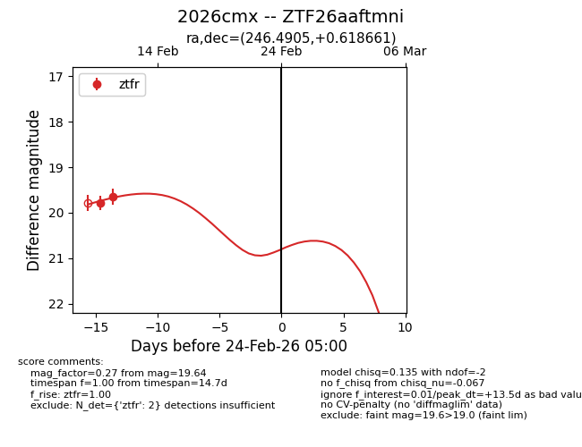
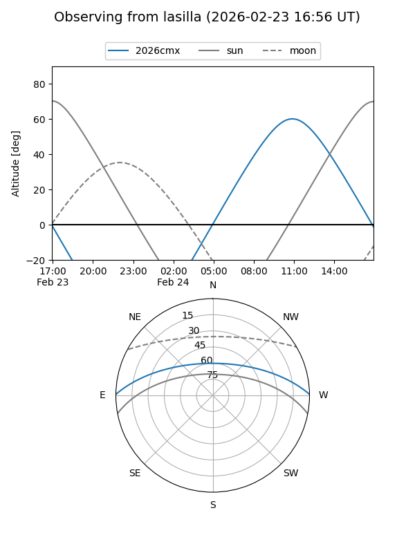
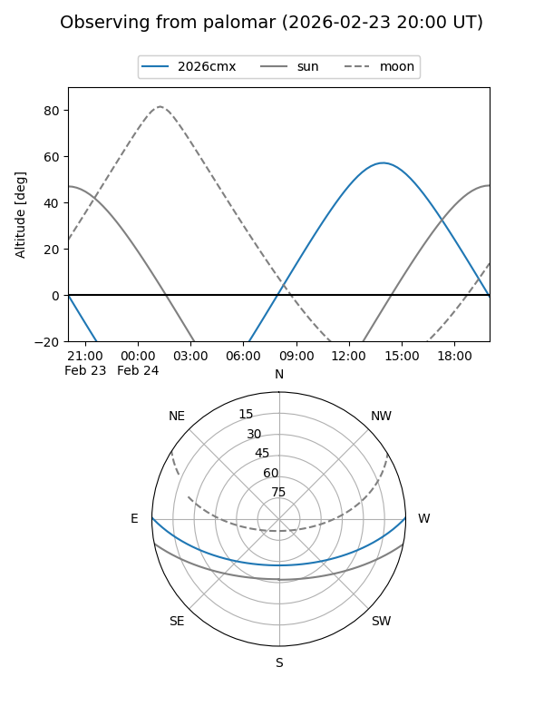

2026cmx
Target 2026cmx at 2026-02-24 09:08
Aliases and brokers:
FINK: link
Lasair: link
ALeRCE: link
TNS: link
YSE: link
alt names
ZTF26aaftmni (ztf,fink_ztf)
2026cmx (tns,yse)
Coordinates:
equatorial (ra, dec) = 246.4905,+0.61866
equatorial (HMS+DMS) = 16:25:57.71,+00:37:07.18
galactic (l, b) = (14.9866,+32.18408)
Flags:
Photometry:
last ztfr=19.64
2 ztfr detections
Lightcurve

Visibility


Additional plots